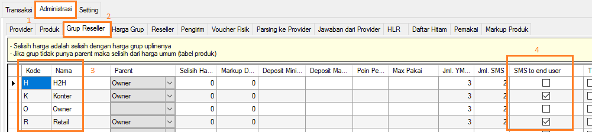
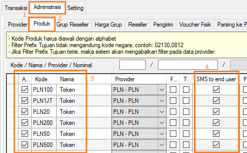
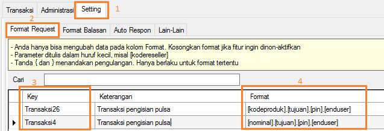
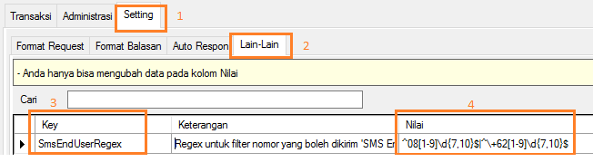
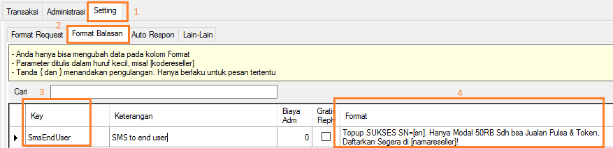

SMS End User
Dalam berbisnis promosi merupakan salah satu ujung tombak meningkatkan penjualan produk. Semakin banyak orang yang mengetahui produk kita akan semakin banyak potensi penjualan produk kita. Apakah dengan OtomaX kita dapat melakukan promosi server pulsa milik kita ke pelanggan atau pembeli pulsa?. Tentu bisa. Semenjak versi 3.3 OtomaX telah menyediakannya, fitur tersebut bernama SMS End User. Dengan fitur ini, setiap pelanggan yang membeli pulsa melalui server Anda akan mendapatkan SMS promosi.
Selain bisa digunakan untuk promosi, SMS End User juga berguna untuk mengirimkan Kode Token PLN ke pelanggan. Jadi, misal di Reseller Anda ada pelanggan membeli Token PLN, maka secara otomatis pelanggan tersebut akan mendapatkan SMS berisi Kode Token PLN. Tidak perlu lagi Reseller mencatatkan Kode Token PLN di secarik kertas lalu diberikan ke pelanggan, atau forward SMS Balasan... seperti jaman batu @#$@!@#
Sayangnya fitur ini tidak tersedia di semua edisi OtomaX, hanya ada di edisi Standard atau lebih tinggi klik disini; sehingga jika edisi OtomaX Anda itu edisi Free, Mini, atau Lite agar dapat mencicipinya harus upgrade dahulu ke edisi Standard atau lebih tinggi klik disini.
Mungkin dibenak Anda timbul pemikiran: wah... gimana nie nyettingnya? cara setting cukup sederhana dan simple sebagai berikut:
-
Klik Administrasi -> Grup Reseller -> Tentukan Grup yang akan diberi SMS end user, lalu
centang cekbox: SMS to end user. Dan terakhir klik tombol Simpan. Perhatikan gambar di
bawah ini:

Di contoh di atas, grup yang diberi fasilitas SMS end user ialah Grup: Retail dan Grup: Konter.
-
Klik Administrasi -> Produk -> Tentukan Produk yang akan diberi SMS end user, lalu centang
cekbox: SMS to end user -> klik tombol Simpan:

-
Klik Setting -> Format Request -> Key: Transaksi, pastikan telah tersedia format
transaksi seperti di bawah ini:

Contoh penggunaan format di atas: PLN20.45234567891.1234.08123456789.
PLN20 -> Kode Produk
45234567891 -> Tujuan
1234 -> PIN
08123456789 -> Nomor HP pelanggan
-
Klik Setting -> Lain - lain -> Key: SmsEndUserRegex pada kolom Nilai isi
dengan Regex seperti gambar di bawah ini:

-
Klik Setting -> Format Balasan -> Key: SmsEndUser:

Disini Anda dapat mengedit SMS yang akan dikirimkan ke pelanggan sesuai dengan kata - kata manis yang Anda inginkan...
- Selesai.